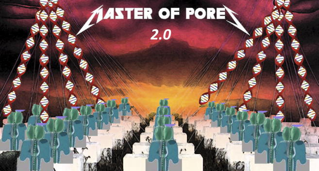

About Master of Pores¶
Master of Pores is a pipeline written in Nextflow DSL2 for the analysis of Nanopore data. It can handle reads from direct RNAseq, cDNAseq, DNAseq etc.
- The pipeline will be composed by four modules:
mop_preprocess: preprocessing (TRANSLATED)
mop_mod: detecting chemical modifications. It reads the output directly from mop_preprocess (ONGOING)
mop_tail: estimating polyA tail size. It reads the output directly from mop_preprocess (TRANSLATED)
mop_consensus: it generates a consensus from the predictions from mop_mod. It reads the output directly from mop_mod (ONGOING)
The name is inspired by Metallica’s Master Of Puppets
{kind=link}
This is a joint project between CRG bioinformatics core and Epitranscriptomics and RNA Dynamics research group.
Reference¶
If you use this tool, please cite our paper:
“MasterOfPores: A Workflow for the Analysis of Oxford Nanopore Direct RNA Sequencing Datasets” Luca Cozzuto, Huanle Liu, Leszek P. Pryszcz, Toni Hermoso Pulido, Anna Delgado-Tejedor, Julia Ponomarenko, Eva Maria Novoa. Front. Genet., 17 March 2020.